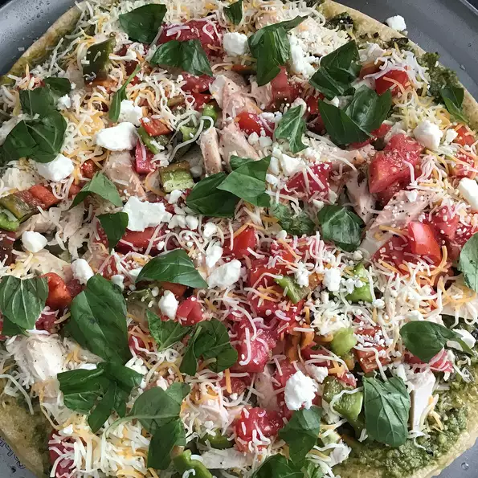

Pizza Recipe

Description
This recipe is really easy to make and it would take you less than 2 hours
Ingredients
- 1 (12 inch) pre-baked pizza crust
- ½ cup pesto
- 1 ripe tomato, chopped
- ½ cup green bell pepper, chopped
- 1 (2 ounce) can chopped black olives, drained
- ½ small red onion, chopped
- 1 (4 ounce) can artichoke hearts, drained and sliced
- 1 cup crumbled feta cheese
Steps
Preheat oven to 450 degrees F (230 degrees C).
Spread pesto on pizza crust. Top with tomatoes, bell peppers, olives, red onions, artichoke hearts and feta cheese.
Bake for 8 to 10 minutes, or until cheese is melted and browned.